Opinie naszych klientów, to wspaniałe rekomendacje. Wszyscy klienci potwierdzają wysokie kompetencje naszego zespołu w zakresie profesjonalnego sprzątania i obsługi klienta.
Czy znasz firmę sprzątającą, która od klientów otrzymuje równie wspaniałe referencje, jak Master Adams?
Poseł do Parlamentu Europejskiego prof. Jerzy Buzek
„Firma Master Adams … jest firmą godną polecenia. Rzetelnie wywiązuje się ze swoich obowiązków współpracując z moim biurem, posła do Parlamentu Europejskiego Jerzego Buzka od 16 lat.
Dlatego jako honorowy obywatel miasta polecam firmę Master Adams jako rzetelną firmę, która na pewno spełni wymagania wszystkich firm korzystających z usług sprzątających.”
Biuro posła do Parlamentu Europejskiego jana olbrychta
,,Przez cały ten okres opiekunem biura jest ta sama osoba, co daje nam poczucie stałego poziomu usług, właściwego rozpoznania potrzeb i realizacji usług zgodnie z naszymi specyficznymi wymogami. … spełnia oczekiwania zarówno Posła, Pracowników biura, jak i naszych Gości. Jesteśmy zadowoleni ze współpracy, czujemy się komfortowo, bezpiecznie, pewni, że firma dba o wizerunek Biura. Usługa … jest kompletna i zaspokaja nasze potrzeby, całkowicie pozwala zapomnieć o sprawach związanych ze sprzątaniem, dbaniem o rośliny, zaopatrzeniem w środki czystości i higieny. … to zespół ludzi profesjonalnych, rzetelnych i zaangażowanych. Pracownicy firmy są uczciwi, uprzejmi, pracują zgodnie z fachowymi zasadami. … to firma godna polecenia.
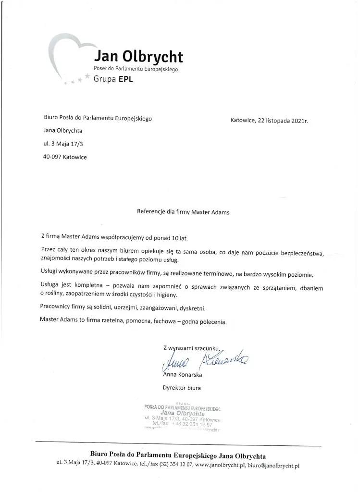
Poseł do pe małgorzata handzlik
„Firma „Master” Pana Tomasza Adamsa obsługiwała moje biuro poselskie w Katowicach w zakresie fachowego sprzątania, utrzymywania czystości i opieki nad biurem. Pracownicy firmy „Master” dali się poznać jako fachowcy, rzetelny i dyspozycyjny wykonawca, realizujący wszystkie zlecenia terminowo, w profesjonalny sposób. Polecam Firmę Pana Tomasza Adamsa jako usługodawcę, który gwarantuje wysoką jakość świadczonych usług.”
Vattenfall IT Services Poland
„W imieniu firmy Vattenfall IT Services Poland Spółka z o.o. z siedzibą w Gliwicach 44-100 przy ul. Gruszczyńskiego 2-4, zaświadczamy, że firma Master Tomasz Adams z siedzibą w Katowicach 40-645 przy ul. Radockiego 291/1 współpracuje z nami od 2015 roku oraz, że w okresie ostatnich 3 lat wykonała dla nas usługi w zakresie utrzymywania czystości o wartości łącznej ponad 300.000,00 złotych brutto.
Usługi świadczone są profesjonalnie, z wyjątkową starannością. Firma dba o zadowolenie klienta. Pracownicy obsługujący nasze biuro sporadycznie się zmieniają, co daje nam duże poczucie bezpieczeństwa i komfortu. Charakteryzuje ich wysoka kultura osobista oraz wiedza i doświadczenie. Także środki i metody sprzątania są przyjazne środowisku i ludziom.”
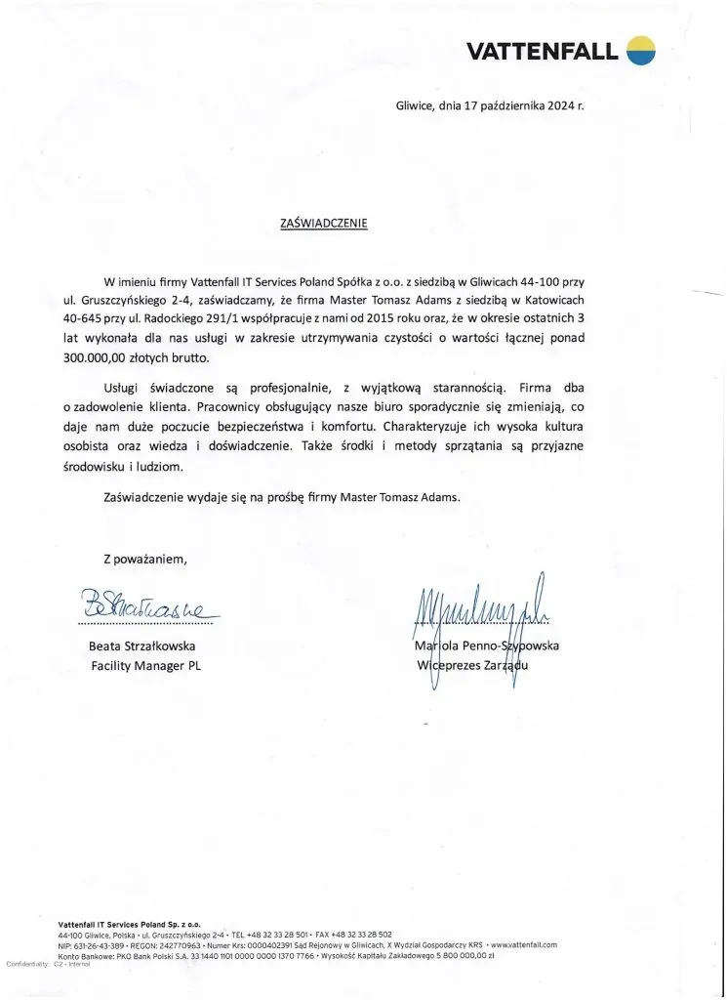
„Vattenfall jest jednym z największych producentów i dostawców energii elektrycznej i ciepła w Europie. 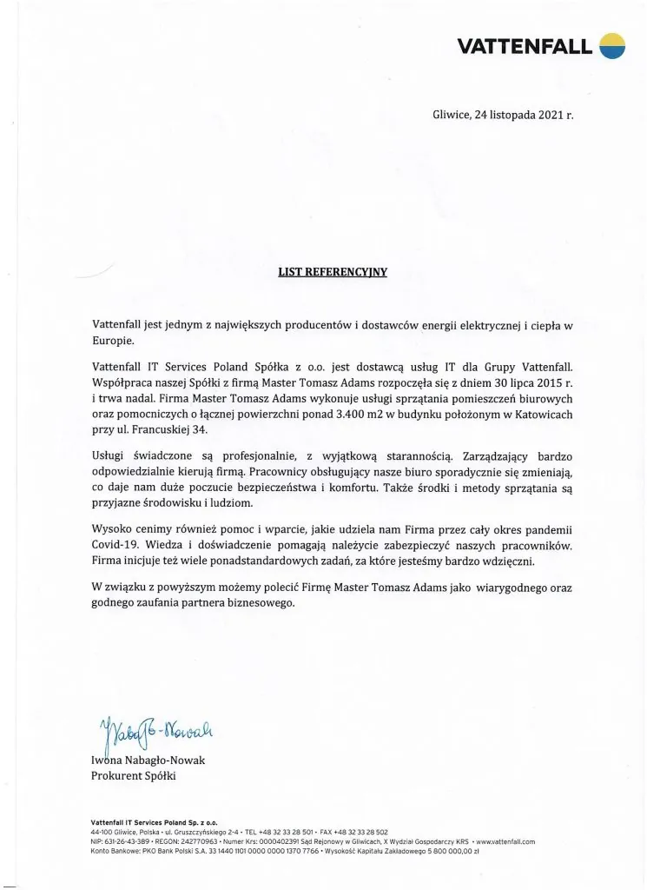
Vattenfall IT Services Poland Spółka z o.o. jest dostawcą usług IT dla Grupy Vattenfall.
Współpraca naszej Spółki z firmą Master Tomasz Adams rozpoczęła się z dniem 30 lipca 2015 r.
i trwa nadal. Firma Master Tomasz Adams wykonuje usługi sprzątania pomieszczeń biurowych
oraz pomocniczych o łącznej powierzchni ponad 3.400 m2 w budynku położonym w Katowicach
przy ul. Francuskiej 34.
Usługi świadczone są profesjonalnie, z wyjątkową starannością. Zarządzający bardzo
odpowiedzialnie kierują firmą. Pracownicy obsługujący nasze biuro sporadycznie się zmieniają,
co daje nam duże poczucie bezpieczeństwa i komfortu. Także środki i metody sprzątania są
przyjazne środowisku i ludziom.
Wysoko cenimy również pomoc i wparcie, jakie udziela nam Firma przez cały okres pandemii
Covid-19. Wiedza i doświadczenie pomagają należycie zabezpieczyć naszych pracowników.
Firma inicjuje też wiele ponadstandardowych zadań, za które jesteśmy bardzo wdzięczni.
W związku z powyższym możemy polecić Firmę Master Tomasz Adams jako wiarygodnego oraz
godnego zaufania partnera biznesowego.”

Jesteśmy dumni, że koncern Vattenfall wybrał Master Adams na dostawcę usług czystościowych. Czujemy satysfakcję i radość, że naszym „zielonym sprzątaniem” włączamy się w działania Vattenfall na rzecz życia w przyjazny dla klimatu sposób.
Te wspaniałe referencje dotyczą sprzątania biura Vattenfall IT Services Poland w Katowicach.
Pochwały dla wszystkich wykonawców usługi, a dla Grażynki i Kasi - liderek Master Adams - brawa na stojąco!
Małgorzata Adams - wicedyrektor Master Adams
# Vattenfall #zrównoważonyrowój #zielonesprzątanie #referencjefirmysprzątającej #opinieMasterAdams #podziękowaniezasprzątanie
Powiatowa Stacja Sanitarno-Epidemiologiczna w Katowicach
„Powiatowa stacja Sanitarno-epidemiologiczna w Katowicach korzysta od grudnia2019 roku z usług firmy Master Adams w zakresie utrzymywania czystości w pomieszczeniach biurowych. Jesteśmy bardzo zadowoleni z tej współpracy, gdyż firma ta w pełni realizuje postanowienia umowy i błyskawicznie reaguje na nowe potrzeby klienta. Z pełną odpowiedzialnością możemy polecić firmę Master Adams wszystkim firmom oczekującym wysokiej jakości’”
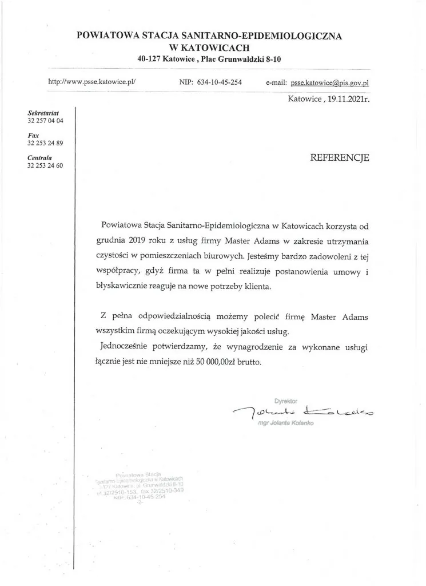
Gdy w 2019 roku pojawiły się sygnały o zagrożeniu epidemicznym COVD-19, Master Adams właśnie rozpoczynała współpracę z Powiatową Stacją Sanitarno-Epidemiczną w Katowicach.
W ofercie napisaliśmy:
„Jesteśmy profesjonalną firmą sprzątającą, która w swoich działaniach kieruje się zasadą zrównoważonego rozwoju. Zapewniając wysoki standard usługi sprzątania, dbamy zarówno o pracowników, wspólny interes klienta i naszego przedsiębiorstwa, jak i o środowisko naturalne.
Gwarantujemy wysoki poziomu estetyczny i higieniczny usługi odtwarzany podczas każdorazowego sprzątania, udział kompetentnych wykonawców - fachowych, zaangażowanych i odpowiedzialnych, zapewniamy ciągłość realizacji zadań, gotowość wykonania dodatkowych usług, …, bierzemy odpowiedzialność za powierzone mienie i ewentualne szkody…”
Słowa dotrzymaliśmy, co potwierdzają otrzymane referencje.
Małgorzata Adams
Grant Thornton
„Z usług sprzątania powierzchni biurowych firmy Master Tomasz Adams korzystamy nieprzerwanie od 2015 roku
w naszym katowickim biurze.
Na przestrzeni tych wielu lat współpraca układa się bardzo dobrze, a zaangażowanie i wychodzenie naprzeciw naszym
potrzebom stało się standardem tej współpracy. Pragniemy także podkreślić, że bardzo doceniamy jak rzetelnie
i starannie wykonywany jest ten serwis, szczególnie w czasie pandemii, kiedy ważne jest bezpieczeństwo w zachowaniu
higienicznych warunków pracy.
Oprócz codziennego zaangażowania w wykonywane obowiązki, Panie sprzątające są zawsze skłonne do pomocy
i reagują na wszystkie nasze prośby i zgłoszenia natychmiastowo. Na szczególną uwagę zasługuje postawa i opieka jaką
Pani Małgorzata Adams roztoczyła nad naszym biurem. Wielokrotnie wychodziła z inicjatywą wsparcia nas dodatkowymi
usługami lub propozycjami wdrożenia małych zmian w biurze, tak aby nasi pracownicy mogli jak najbezpieczniej czuć się
w biurze podczas trwającej pandemii. To że nasza współpraca od początku przebiega w milej i bezkonfliktowej atmosferze,
jest przede wszystkim jej zasługą oraz profesjonalnego zespołu jaki prowadzi.
W ostatnich trzech latach naszej współpracy wynagrodzenie jakie otrzymała od nas firma z tytułu świadczonych usług
przekraczało kwotę 50 000 zł brutto.
Z pełnym przekonaniem rekomendujemy usługi i profesjonalną opiekę nad biurami jakie świadczy firma Master Tomasz
Adams, ponieważ gwarantują one najwyższy poziom serwisu, elastyczność i szczególne zrozumienie potrzeb Klienta.”
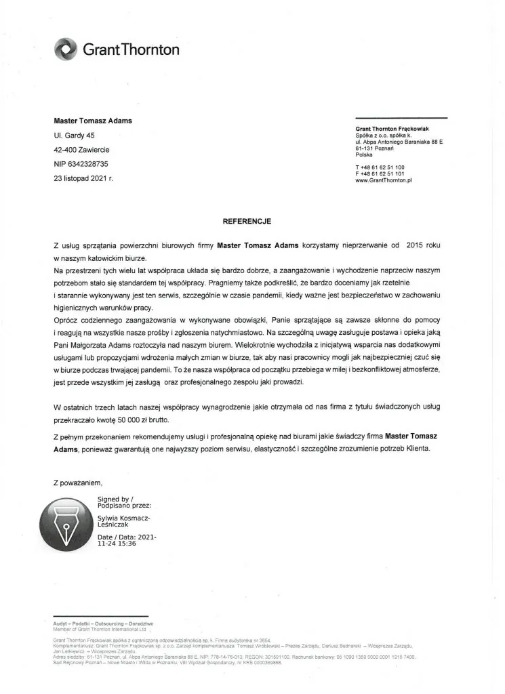
Tritem
„Firma Master Tomasz Adams z siedzibą w Zawierciu, przy ul. Gardy 45 od wielu lat świadczy dla nas usługi w zakresie
utrzymania czystości i higieny w pomieszczeniach biurowych naszej firmy.
Wynagrodzenie otrzymane za uslugi w ciągu ostatnich 3 lat jest większe niż 125.000,00 zł brutto.
Firma Master Tomasz dysponuje profesjonalnym sprzętem i odpowiednio przeszkoloną kadrą. Usługi wykonywane
są terminowo oraz przy zachowaniu wysokich standardów. Personel szybko reaguje na ewentualne prośby.
Polecamy firmę Master Tomasz Adams, jako solidnego, uczciwego i godnego zaufania partnera.”
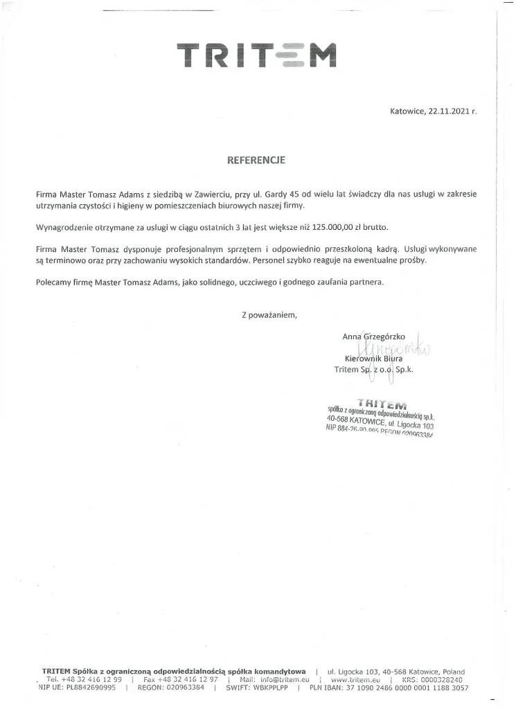
Koleje Śląskie
„Koleje Śląskie Spółka z ograniczoną odpowiedzialnością z siedzibą w Katowicach udzielają niniejszym referencji firmie Master Tomasz Adams z siedzibą w Katowicach (40-645 Katowice) ul. Radockiego 291/1
Niniejszym stwierdzam, że w okresie od 01.01.2022 r. do dnia dzisiejszego firma Master Tomasz Adams świadczą na rzecz Koleje Śląskie sp. z o.o. z siedzibą 40-074 Katowice ul. Raciborska 58 usługę utrzymania czystości w obiektach.
Kwota usług zrealizowanych na rzecz Kolei Śląskich sp. o. o., w ciągu ostatnich 3 lat, przekracza kwotę 300.000,00 zł.
Usługa jest wykonywana z należytą starannością, zgodnie z zakresem rzeczowym umowy, w sposób rzetelny i terminowy. Warte podkreślenia jest zaangażowanie stałego personelu.
Rekomendujemy firmę Master Tomasz Adams z siedzibą w Katowicach jako solidnego i rzetelnego partnera, dysponującego wykwalifikowaną kadrą gwarantującą wysoką jakość oraz terminowość wykonanych czynności.”

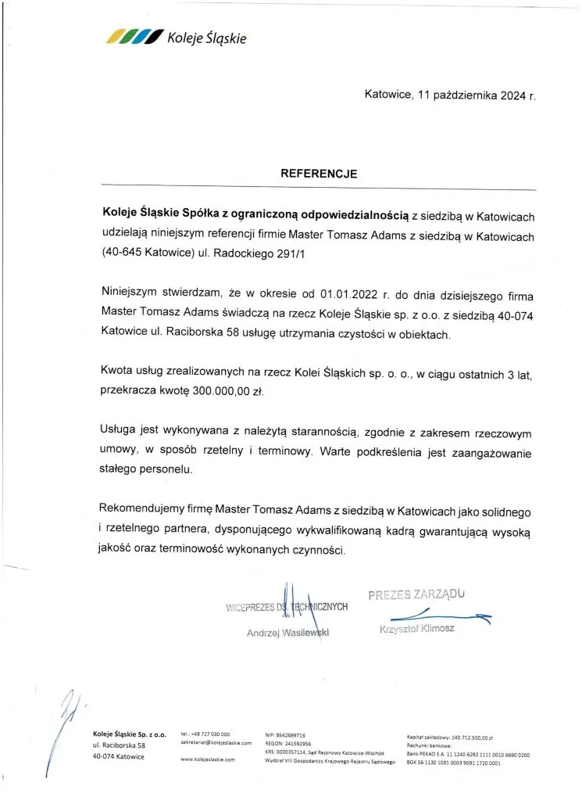
„…Niniejszym stwierdzam, że w okresie od 08.09.2017r. do dnia dzisiejszego Firma Master Tomasz
Adams świadczą na rzecz Koleje Śląskie Sp. z o.o. z siedzibą 40-074 Katowice ul. Raciborska 58 usługę
utrzymania czystości w obiektach.
Firmy ta wywiązuje się ze swoich obowiązków w sposób należyty i zasługujący
na uznanie. Współpraca oparta jest na wzajemnym zaufaniu i zrozumieniu specyfiki realizowanych
zadań w zakresie utrzymania czystości w obiektach.
Wykonawca bardzo sumiennie wykonuje obowiązki, jest doskonałym partnerem do
współpracy, ewentualne drobne uwagi podejmowane są niezwłocznie.
Do czyszczenia powierzchni i
utrzymania czystości używane są przez firmę wyłącznie środki wysokiej jakości, nietoksyczne,
nieszkodliwe dla zdrowia, ekologiczne produkowane z odnawialnych zasobów przyrody,
biodegradowalne i posiadające wymagane atesty dopuszczające do stosowania w Polsce (Państwowy
Zakład Higieny).
Dyrektor oraz Wicedyrektor Master Adams gwarantuje dobór pracowników posiadających
stosowne uprawnienia oraz zdolności do starannego i należytego wykonywania obowiązków. Aktywnie
reaguje na bieżące zmiany i czynnie uczestniczy w procesie zapewnienia maksimum komfortu
związanego z posprzątanymi pomieszczeniami.
Pracownicy świadczący usługi utrzymania czystości obiektów zawsze chętnie pomogą w
nieprzewidzianych sytuacjach, są doskonałą wizytówką spółki. Należy pozytywnie ocenić ich wygląd,
kulturę osobistą i profesjonalizm podczas wykonywania obowiązków, co wymiernie wpływa
na ogólny wizerunek kontrahenta.
Z satysfakcją stwierdzam, że wybór firmy Master Adams do realizacji usługi utrzymania czystości
obiektów jest ze wszech miar korzystny dla obu stron, szczególnie z uwagi na fakt, że
firma wykazujesię nadzwyczaj aktywnym i w pełni profesjonalnym podejściem
do powierzonych zadań, niezwłocznie reagując na dynamiczny charakter zmian. Przyczynia się do tego
niewątpliwie wysoka jakość wykonania obowiązków, w trakcie obowiązywania umowy nie zdarzają się
sytuacje mogące powodować negatywne skutki dla Spółki, bądź utratę zaufania do wykonawcy i jego
pracowników.
Wszystkim zainteresowanym usługą utrzymania czystości w obiektach polecam wymienioną na
wstępie Firmę Master Tomasz Adams jako rzetelnego, kompetentnego i zaangażowanego
kontrahenta…”
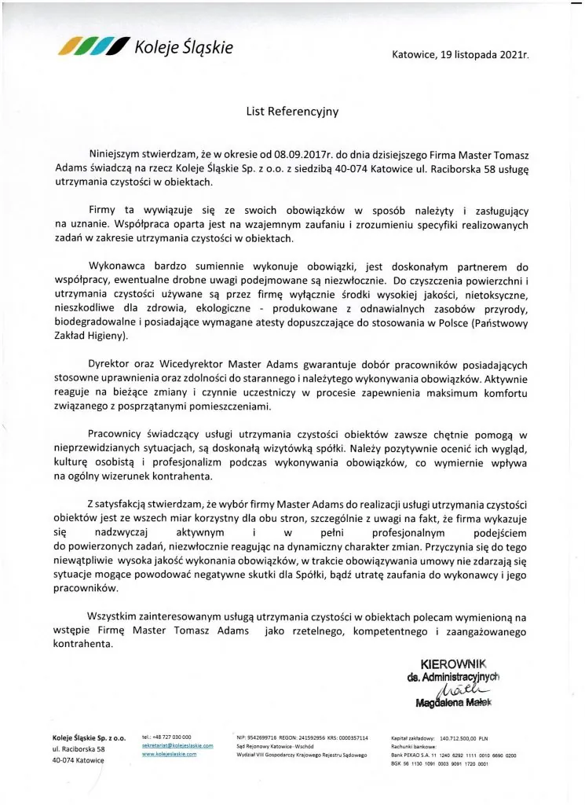
ASTOR Katowice
„Firma ASTOR Sp. z o.o. współpracuje z firmą Master Adams od 2016 r. zapewniając utrzymanie czystości w pomieszczeniach biurowych oraz dbając o kwiaty biurowe.
Jesteśmy bardzo zadowoleni z profesjonalizmu firmy Master Adams. Zaangażowanie pracowników tej firmy w wykonywane obowiązki związane z utrzymaniem czystości oraz szybka reakcja na nasze potrzeby czynią z niej solidnego partnera do współpracy.
Z pełną odpowiedzialnością możemy polecić firmę Master Adams wszystkim firmą oczekującym wysokiej jakości usług.”
„Przy okazji chciałbym podziękować za pełny profesjonalizm i wysoką jakość świadczonych usług.Na pewno będziemy Państwa polecać Najemcy, który zajmie po nas obecne biuro …”
TestDNA
„Z usług czyszczenia i porządkowania powierzchni biurowych oraz laboratoryjnych firmy Master Tomasz Adams korzystamy nieprzerwanie od 2021 roku.
Usługi te są realizowane z wykorzystaniem profesjonalnych środków chemicznych oraz nowoczesnego sprzętu, co zapewnia ich wysoką jakość. Prace są wykonywane przez wykwalifikowany personel w godzinach, które nie zakłócają codziennego funkcjonowania naszego biura.
Cenimy otwartość firmy na nasze sugestie oraz ich umiejętność starannego i efektywnego realizowania dodatkowych zleceń.
Master Adams wyróżnia się rzetelnością i terminowością w wykonywaniu powierzonych obowiązków, co sprawia, że z pełnym przekonaniem polecamy tę firmę jako solidnego partnera.
Jednocześnie potwierdzamy, że w okresie ostatnich 3 lat naszej współpracy, wynagrodzenie jakie otrzymała od nas firma z tytułu świadczonych usług przekraczało 300 000,00 zł.”
„Współpracujemy z firmą Master Adams od grudnia 2021 roku. Firma świadczy dla nas usługi w zakres których wchodzi sprzątanie pomieszczeń biurowych oraz socjalno-sanitarnych.
Świadczone przez firmę usługi wykonywane są przy użyciu profesjonalnych środków chemicznych, a dodatkowe usługi również przy użyciu nowoczesnego sprzętu. Wszystkie prace wykonywane są przez wykwalifikowany personel, w czasie nie kolidującym z pracą naszego biura.
Firma jest otwarta na sugestie, sprawnie i starannie realizuje również dodatkowo zlecone zadania.
Firma Master Adams wywiązuje się z powierzonych obowiązków rzetelnie i terminowo, dlatego też z całą pewnością możemy polecić Master Adams jako solidnego partnera.”
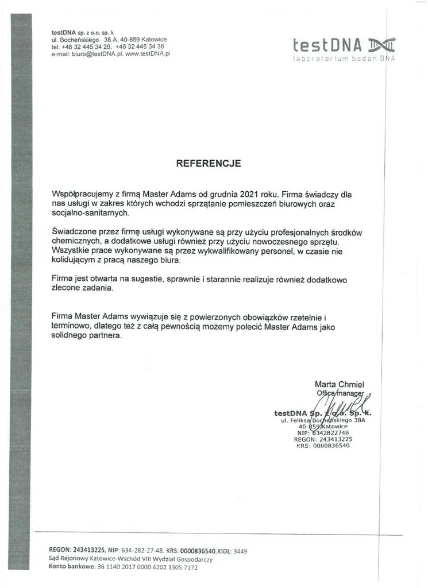
Berlitz poland sp. Z o. O.
... firma wykazała się niezwykłym profesjonalizmem i rzetelnością. Zarówno pracownicy, jak i zarządzający firmą są bardzo kompetentni. Darzymy ich wyjątkowym zaufaniem, bez wahania powierzając zasoby biura materialne i niematerialne. Ogromne znaczenie ma także wysoka elastyczność organizacyjna, tj. dopasowanie się do naszych wymagań, realizacja dodatkowych potrzeb, a także szeroka dostępność czasowa, co przy dużym obciążeniu obowiązkami służbowymi jest niezwykle ważne. Wysoko cenimy sobie współpracę z firmą i tym samym pragniemy polecić usługi wszystkim jej przyszłym klientom, będąc przekonanym o o należytym i profesjonalnym ich wykonaniu.
Grupa Pracuj
Rekomenduję firmę Master Tomasz Adams jako solidną, godną zaufania, w pełni przygotowaną do wykonywania zadań porządkowych. Doświadczona kadra oraz potencjał techniczny i organizacyjny gwarantują wysoki poziom wykonywania usług. Powierzone prace zawsze były wykonywane zgodnie z oczekiwaniami, w pełni profesjonalnie i zgodnie z wyznaczonym harmonogramem. Z przyjemnością polecam firmę Master Tomasz Adams jako rzetelnego partnera.
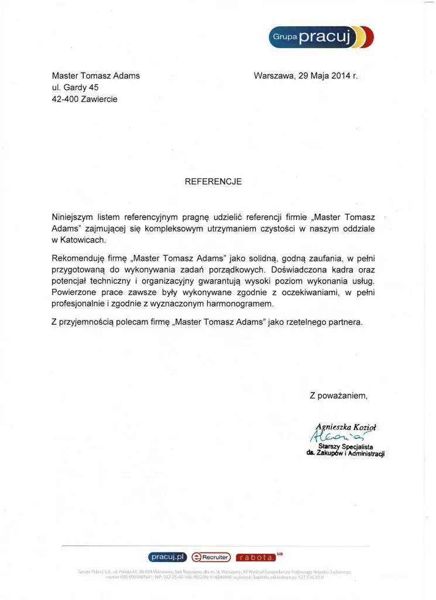
Techem
„Z firmą „MASTER Tomasz Adams” współpracujemy od 1.2.2022 r. w zakresie utrzymania czystości w pomieszczeniach biurowych na terenie TECHEM Services sp. z o.o. z siedzibą w Katowicach przy ul. Kossutha 9.
Dostawca z dużym profesjonalizmem podszedł do rozplanowania codziennej obsługi powierzchni prawie 1.500 m2 oraz doczyszczenia lokali po poprzednim usługodawcy. Prace są wykonywane z najwyższą dokładnością a w razie pytań właściciele firmy są zawsze do dyspozycji i elastycznie re- agują na nasze potrzeby.
Z pełnym przekonaniem rekomendujemy usługi świadczone przez dostawcę.”
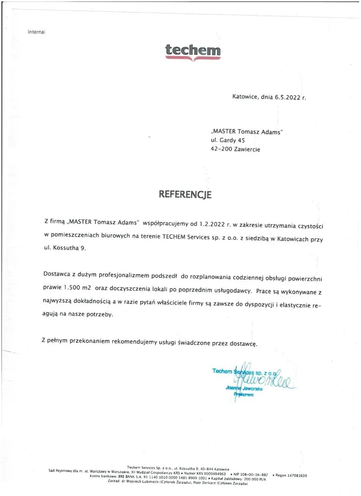
Astor
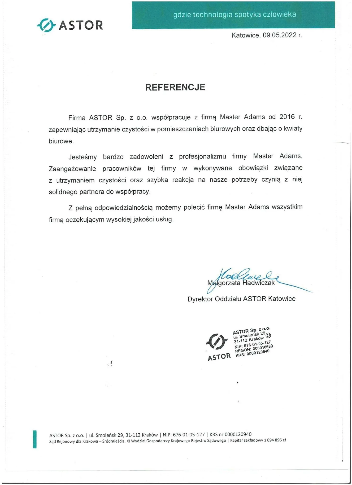
Agencja Handlowa „CENTROSTAL” S.A.
Zespół Master Adams od 2010 r. wykonuje dla Agencji Handlowej „CENTROSTAL” S.A. usługę sprzątania pomieszczeń biurowych i pomocniczych o łącznej powierzchni kilku tysięcy m2 w budynku położonym w Katowicach przy ul. Wita Stwosza 7.
Pracownicy Firmy w sposób wyjątkowo staranny, fachowy i terminowy wywiązują się z powierzonych im zadań. Zasługują na najwyższe uznanie, gdyż standardy, które stosują są niespotykane w tej branży. W swojej pracy wykorzystują profesjonalne środki czyszczące bez toksycznych substancji posiadające ekologiczne wyróżnienia i certyfikaty, w tym złoty certyfikat Cradle to Cradle, zapewniające bezpieczeństwo użytkowników i środowiska. Metody sprzątania i używany sprzęt są przyjazne dla zdrowia ludzi i otoczenia.
Cały personel bieżąco podlega szkoleniom z zakresu norm bezpieczeństwa i higieny pracy oraz ochrony środowiska.
Nie tylko my, ale również nasi Najemcy bardzo wysoko oceniają jakość wykonywanych usług, czego potwierdzeniem są bieżące pochwały oraz wyniki przeprowadzonej ankiety dotyczącej poziomu satysfakcji użytkowników. Sto procent
badanych oceniło usługę jako idealną i bardzo dobrą.
Nasz dotychczasowy strategiczny Najemca po zmianie swojej siedziby wybrał tę Firmę, gdyż przyzwyczajony do najwyższej jakości, nie godził się na jej obniżenie już we własnych budynkach. Właściciele Firmy zawsze gotowi są służyć nam pomocą i wykonać dodatkową usługę. Mamy stały kontakt i nigdy nasze potrzeby nie zostały zignorowane. Jesteśmy bardzo zadowoleni ze współpracy z tak profesjonalną i etyczną Firmą.
Naszego Kontrahenta możemy polecić każdemu dla kogo ma znaczenie najwyższy poziom świadczonych usług.
Hewlett Packard Polska Sp. z o. o.
W imieniu firmy Hewlett Packard pragnę złożyć na Pana ręce najserdeczniejsze podziękowania Pani Grażynie Szałowskiej, zajmującej się utrzymaniem czystości naszego katowickiego biura. Dzięki skrupulatności i uczciwości Pani Grażyny, przesłane z Warszawy do Katowic pieniądze, omyłkowe wyrzucone wraz z pustymi kartonami przez naszego pracownika, nie zaginęły i trafiły do odbiorcy, za co jesteśmy bardzo wdzięczni…
BBJ Consult AG
Niniejszym potwierdzamy, że Pan Tomasz Adams w okresie od października 2003 do września 2004 zaangażowany był jako trener/doradca w ramach Projektu Phare 2001 SSG Promocja Zatrudnienia/Rozwój Zasobów Ludzkich i wniósł znaczący wkład w jego sukces, czym przyczynił się do promocji zatrudnienia wśród bezrobotnych i innych osób doświadczających trudności związanych z rynkiem pracy w województwie śląskim.
Wydział ochrony środowiska urzędu marszałkowskiego województwa śląskiego
„Rzetelność i profesjonalizm kadry pracowniczej firmy Master Adams pozwala ocenić tę firmę jako kontrahenta gwarantującego swoim działaniem wysoką jakość świadczonych usług.”
PMG Sp. z o. o.
… Przez cały okres trwania usługi współpraca układała się bez zastrzeżeń. Firma dbała o wizerunek naszego budynku, utrzymując w czystości codziennie około 10 tys. m2 powierzchni biurowej i użytkowej … Wykonawstwo cechowała staranność, profesjonalizm, solidność, obowiązkowość otwartość na nowe rozwiązania.
… jest firmą elastyczną, mobilną i dobrze zorganizowaną. Poziom wykonywanych prac pozwala nam zarekomendować powyższą firmę innym klientom.
Górniczy Zespół Lecznictwa Ambulatoryjnego w Katowicach Fundacji „Unia Bracka”
… Pracownicy dali się poznać jako osoby odpowiedzialne, uczciwe, wykonujące swoje obowiązki profesjonalnie i z dużym zaangażowaniem. Zawsze chętni do pomocy w sytuacjach awaryjnych … Ewentualne uwagi są natychmiast rozpatrywane zawsze z korzyścią dla klienta. Szczególnie doceniamy dbanie o mienie i wizerunek klienta. Współpracę opieramy na zaufaniu, dyskrecji i fachowości.
Bruno Żółtowski psycholog biznesu, trener, coach
Małgorzata to świadoma menedżer, nieustannie poszerzająca swoją wiedzę i kompetencje. Tytan pracy, uważna, przedsiębiorcza, mądra i samodzielna. Jest autorką najbardziej twórczego i niezwykłego wystąpienia, jakie kiedykolwiek obserwowałem podczas szkolenia. Z przyjemnością rekomenduję Małgorzatę jako trenera, specjalistkę w zakresie ochrony zdrowia i profesjonalną menedżer.
Danuta Poważa psycholog, emerytowana nadkomiszarz Policji, wykładowca w Szkole Policji, trener
Małgorzata Adams w każdym obszarze działania jest profesjonalistką przywiązującą wagę do najdrobniejszych szczegółów, dzięki temu wszystkie realizowane przez nią projekty są na najwyższym poziomie merytorycznym i organizacyjnym.
Jej system wartości oraz wiedza przekazywana na szkoleniach jest spójna z zasadami postępowania w sferze prywatnej i zawodowej. Przestrzega prawa pracy i konsekwentnie dba o całe otoczenie - ludzi, zwierzęta i rośliny, stwarzając wokół siebie przyjazne środowisko dla rozwoju zawodowego i osobistego.
Małgorzata Adams wykazuje ogromne zaangażowanie w podejmowane przez siebie przedsięwzięcia, dzięki czemu szkolenia prowadzone przez nią zawierają ogromną dawkę wiedzy podaną w sposób zróżnicowany metodycznie, przystępny, angażujący uczestników.
Mimo bogatego i różnorodnego doświadczenia zawodowego ciągle podnosi swoje kwalifikacje, poszukuje nowych wyzwań i możliwości dla siebie i ludzi z którymi i dla których pracuje. Po prostu….człowiek, który innowacyjnie, z pasją i z zasadami wchodzi w nowe wyzwania i oczekiwania….
BETIWAN Iwan Beata
Dziękujemy za trud i pracę włożoną w przygotowanie szkolenia i wprowadzenie nas w świat profesjonalnego i przyjemnego sprzątania. Pokazała Nam Pani tajniki sztuki sprzątania, dzięki czemu zrozumiałyśmy, jak bardzo potrzebna jest wiedza i ciągłe jej poszerzanie, aby higienicznie i efektywnie zapewnić zdrowie i bezpieczeństwo Naszym klientom. Pani dobre słowo i wiara w Nas na pewno pomoże Nam w osiągnięciu sukcesu. Dzięki zdobytej wiedzy, będziemy pewnie wykonywać obowiązki, a swoje umiejętności manifestować rozważnie. Serdecznie dziękujemy za poświęcony czas i uwagę.
Zakład Doskonalenia Zawodowego w Katowicach- Centrum Kształcenia Zawodowego w Bytomiu
Zakład Doskonalenia Zawodowego w Katowicach- Centrum Kształcenia Zawodowego w Bytomiu rekomenduje Panią Małgorzatę Adams jako wykładowcę instruktora na szkoleniach. Pani Małgorzata Adams prowadziła zajęcia dydaktyczne na kursie: ” Operator sprzętu sprzątającego” … Słuchacze zorganizowanego szkolenia wyrazili zadowolenie z prowadzonych zajęć, podkreślali profesjonalizm, zaangażowanie oraz znakomite przygotowanie merytoryczne.
BBJ Consult AG
Niniejszym potwierdzamy, że Pani Małgorzata Arabas w okresie od października 2003 do września 2004 zaangażowana była jako trener/doradca w ramach Projektu Phare 2001 SSG Promocja Zatrudnienia/Rozwój Zasobów Ludzkich i wniosła znaczący wkład w jego sukces, czym przyczyniła się do promocji zatrudnienia wśród bezrobotnych i innych osób doświadczających trudności związanych z rynkiem pracy w województwie śląskim.
ZDZ w Katowicach Ośrodek Kształcenia Zawodowego w Żarkach
…Współpraca w w/w zakresie układała się bardzo dobrze. Wykładowca wykazuje duże zaangażowanie w pracy. Pani mgr Małgorzata Adams potrafi nawiązać bardzo dobry kontakt ze słuchaczami. Pragnę wyrazić nadzieję, iż nadal będziemy mogli liczyć na współpracę z Panią w powyższym zakresie.
The language factory
… Kurs „Profesjonalne sprzątanie” był bardzo bogatym merytorycznie szkoleniem i niezwykle przydatnym w praktyce. Kurs był bardzo intensywny, wypełniony wiedzą z wielu dyscyplin mających związki z fachowym sprzątaniem. Zróżnicowane formy dydaktyczne, jak wykłady, ćwiczenia , pokazy, chociaż dotyczyły również trudnych zgadnień z zakresu chemii, fizyki, mikrobiologii …, były podane w bardzo przystępnej formie, były dla uczestników zrozumiałe i atrakcyjne. Dzięki atmosferze utrzymywanej przez panią Małgorzatę Adams podczas szkolenia, uczestnicy czuli się bardzo swobodnie, pewni siebie. Wszyscy uznali, że szkolenie było bardzo ciekawe, bardzo praktyczne i niezwykle inspirujące. Wszystkim zainteresowanym profesjonalnym sprzątaniem polecamy szkolenia prowadzone przez Panią Małgorzatę Adams